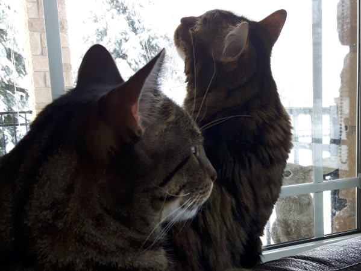

About Me
I am a visual artist based in Ottawa, Canada, and a graduate of the University of Ottawa's BFA program. As an aspiring digital media designer, I am currently a 1st year student in the IMD program at Algonquin College. One day, I hope to pursue a career that combines traditional art and digital design.
In my spare time, I enjoy:- painting and drawing
- knitting
- hanging out with my cats, Theo and Leo
I feel most at peace when I can take my time, whether I am slowly sipping my morning coffee or sitting outside appreciating nature. While I am happy in my comfort zone, I know that I must step outside of it once in a while in order to grow.
"Normality is a paved road: it's comfortable to walk, but no flowers grow on it." -Vincent van Gogh